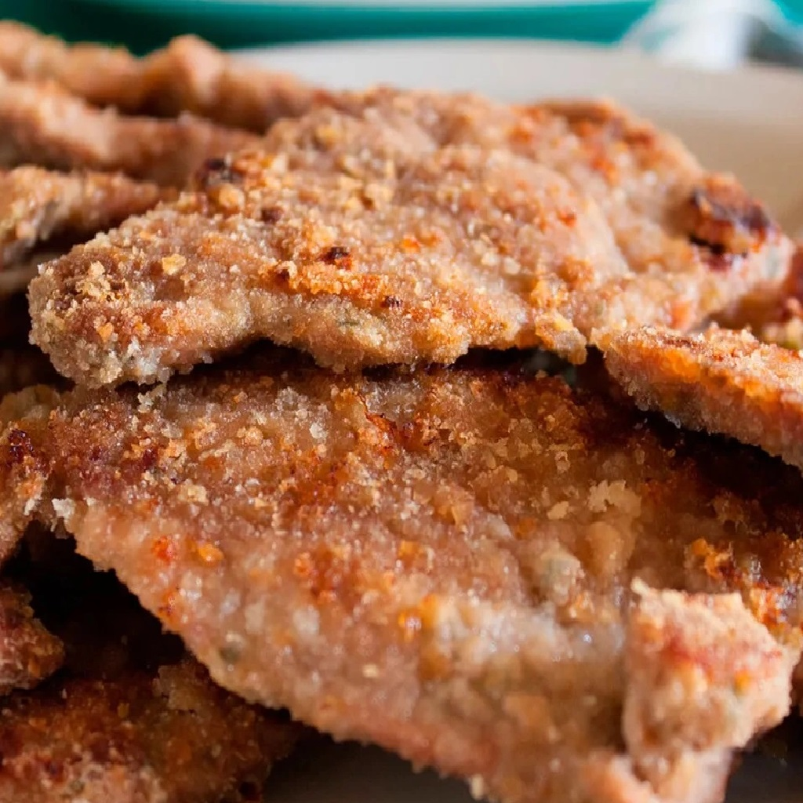

Receta de Milanesas de carne en pocos y simples pasos
Ingredientes:
- 1 kilo de filetes de ternera (sin hueso).
- 2 huevos.
- 1/2 taza de leche.
- 1 taza de harina.
- 1/2 taza de pan rallado.
- Sal y pimienta al gusto.
- Aceite vegetal para freír.
Preparación:
- Coloque los filetes de ternera entre dos papeles de plástico y golpee con un martillo de carne para alisarlos.
- En un tazón, mezcle los huevos con la leche y la harina. Agregue sal y pimienta al gusto.
- Pase los filetes por la mezcla de huevo y harina, luego por el pan rallado.
- Caliente el aceite en una sartén a fuego medio-alto. Fría los filetes de ternera hasta que estén dorados y cocidos por ambos lados.
- Escurra sobre papel absorbente y sirva caliente.
Presentación:
- Puedes servir las milanesas de ternera en un plato plano y colocarlas en una sola capa.
- Puedes decorar con hojas frescas de hierbas como el romero o el perejil, o con rodajas de limón.
- Si deseas, puedes servir la milanesa con una guarnición de puré de papas o ensalada.
- Puedes servirlo con una salsa como salsa de tomate o salsa de ajo, o con una mayonesa casera.
Resultado final:
